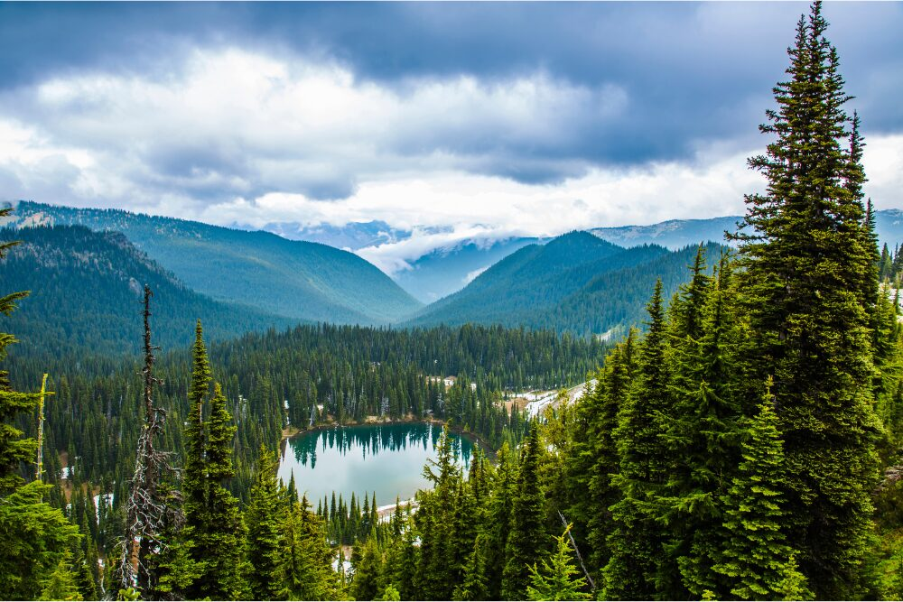
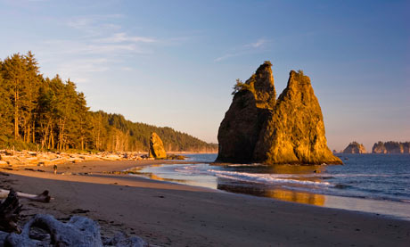

Pacific Northwest
From Wikipedia, the free encyclopedia
This article is about the region of northwestern North America and its Pacific Ocean coastal waters in Canada and the United States.
From Wikipedia, the free encyclopedia
This article is about the region of northwestern North America and its Pacific Ocean coastal waters in Canada and the United States.
Definitions of the "Pacific Northwest" region vary, and even residents of the region do not agree on the exact boundary.[7][8] The most common conception includes the U.S. states of Oregon, Washington, Idaho, and the Canadian province of British Columbia. Broader definitions of the region have included the U.S. states of Alaska and parts of the states of California, Montana, and Wyoming, and the Canadian territory of Yukon. Definitions based on the historic Oregon Country reach east to the Continental Divide, thus including all of western Montana and western Wyoming. Sometimes, the Pacific Northwest is defined as being the Northwestern United States specifically, excluding Canada.
The Pacific Northwest (PNW; French: Nord-Ouest Pacifique), also referred to as Cascadia, is a bi-national geographic and cultural region in Western North America defined by its coastal waters of the Pacific Ocean to the west and, loosely, by the Rocky Mountains to the east. Though no official boundary exists, the most common conception includes the U.S. states of Oregon, Washington, Idaho, and the Canadian province of British Columbia. Some broader conceptions reach north into the Alaska Panhandle and Yukon, south into Northern California, and east into Western Montana. Other conceptions may be limited to the coastal areas west of the Cascade and Coast mountains.
The Northwest Coast is the coastal region of the Pacific Northwest, and the Northwest Plateau (known simply as "the Interior" in British Columbia), is the inland region. The term "Pacific Northwest" should not be confused with the Northwest Territory (also known as the Great Northwest, a historical term in the United States) or the Northwest Territories of Canada.
The region's largest metropolitan areas are Greater Seattle, Washington, with 4 million people; Metro Vancouver, British Columbia, with 3.4 million people; Greater Portland, Oregon, with 2.5 million people; the Boise, Idaho metropolitan area with 845,877 people, and the Spokane-Coeur d'Alene combined statistical area with 793,285 people.
The culture of the Pacific Northwest is influenced by the Canada–United States border, which had been established at a time when the region's inhabitants were composed mostly of indigenous peoples. Two sections of the border—one along the 49th parallel south of British Columbia and one between the Alaska Panhandle and northern British Columbia—have left a great impact on the region. According to Canadian historian Ken Coates, the border has not merely influenced the Pacific Northwest—rather, "the region's history and character have been determined by the boundary".


| City | State | Population |
|---|---|---|
| Seattle | Washington | 792,909 |
| Portland | Oregon | 630,447 |
| Boise City | Idaho | 238,853 |
| Tacoma | Washington | 231,747 |
| Spokane | Washington | 231,061 |
| Vancouver | Washington | 201,530 |